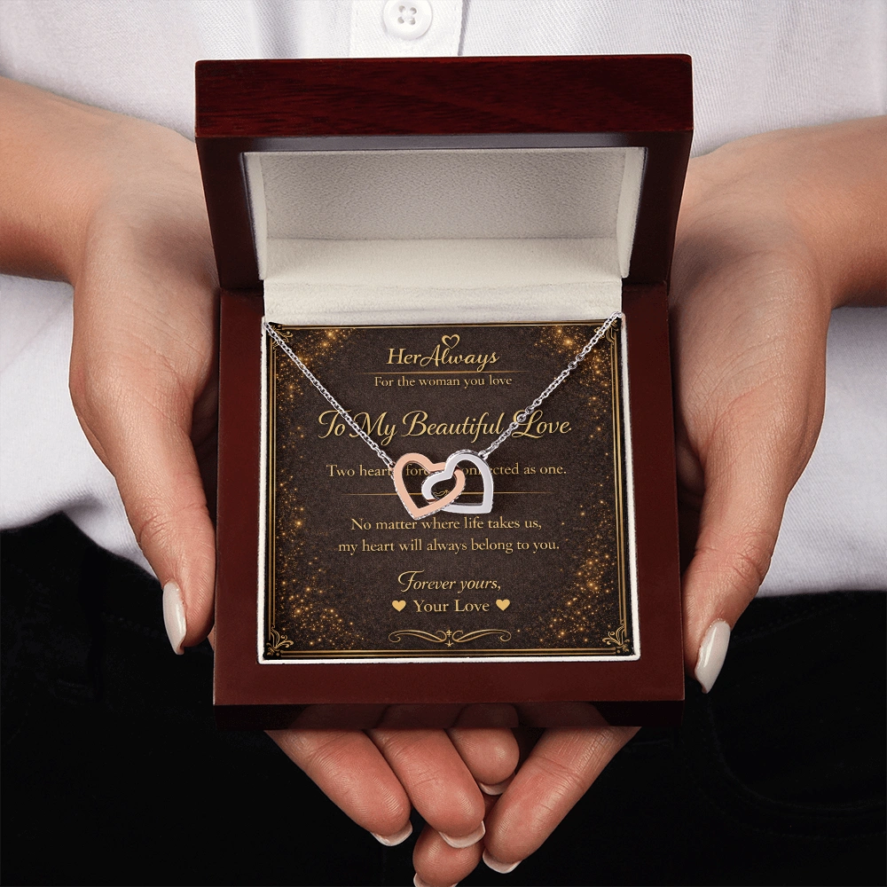

If you've been searching for interlocking hearts necklace meaning, the short answer is this: two hearts physically joined together represent an unbreakable bond between two people. It's one of the oldest and most universally understood symbols in jewelry — which is exactly why it's still one of the most gifted necklace styles today.
You'll also see this same design called a double heart necklace in most jewelry stores. Both names describe the same idea, just with slightly different wording, and both carry the same emotional weight.
Because a necklace is worn close to the chest, giving someone an interlocking hearts design is a quiet but clear way of saying: my heart is tied to yours.
Interlocking Hearts Necklace Meaning (Quick Guide)
Jump to: Symbolism | Double Heart vs Interlocking | Who to Give It To | FAQ
- Core meaning → Two lives joined, unbreakable connection
- Also called → Double heart necklace, linked hearts necklace
- Best for → Anniversaries, birthdays, "just because" gifts
- Compares to → Infinity (endless love) and Love Knot (deep commitment)
| Style | Meaning | Best For |
|---|---|---|
| Interlocking Hearts | Unbreakable bond, two lives joined | Romantic partners |
| Double Heart (side by side) | Two people, close but independent | Mother & daughter, close friends |
| Single Heart | General love & affection | Any romantic occasion |
What Does an Interlocking Hearts Necklace Symbolize?

Best for: Anniversaries, birthdays, and meaningful "just because" gifts
At its core, the interlocking hearts necklace meaning comes down to two ideas. First, an unbreakable connection — because the two hearts are physically linked, they can't be separated without breaking the shape itself, which is exactly the point. Second, endless devotion — much like an infinity symbol, the continuous loop of two joined hearts suggests a love that keeps circling back rather than coming to an end.
This is different from wearing a single heart pendant, which represents love and affection in a general sense. Interlocking hearts go a step further by representing a specific relationship — two individuals, two hearts, one shared bond.
It's also one of the safest necklace symbols to gift, because unlike more abstract designs, almost everyone instantly understands what two joined hearts mean the moment they see it.
Double Heart vs Interlocking Hearts — Is There a Difference?
Not really, but there's a small nuance worth knowing before you buy. In casual search and everyday conversation, double heart necklace meaning and interlocking hearts necklace meaning are treated as the same thing, and in most cases they are.
Where it gets slightly more specific is in the design itself. When the two hearts are truly interlocking — physically hooked through one another — the meaning leans hardest toward "unbreakable" and "joined as one." When the two hearts sit side by side instead of linked, the meaning shifts slightly toward two people who remain close while still being their own person, which is why that version is also popular as a mother-daughter or best-friend gift.
For a romantic gift, the interlocking version is almost always the stronger choice, since it points directly at partnership rather than general closeness.
Who Do You Give an Interlocking Hearts Necklace To?
The interlocking hearts necklace is most commonly given between romantic partners — it's a popular pick for anniversaries, Valentine's Day, and birthdays because it says something specific without needing a long message attached.
That said, because the symbolism is really about "two people joined together," it also works well as a mother-daughter necklace or a gift between close friends who consider their bond unbreakable. If you're buying for a partner, though, this design communicates commitment more directly than almost any other necklace style available.
How It Compares to Other Necklace Symbols
If you're still deciding between necklace symbols, here's how interlocking hearts stacks up against two other popular choices. The infinity necklace represents endless love in a more abstract way, without directly referencing "two" of anything, which makes it a slightly softer, more universal choice. The single heart necklace represents love and affection broadly, without being tied to a specific relationship. Interlocking hearts sits between the two — more specific than a single heart, more concrete than infinity.
You can see the full breakdown of every necklace symbol, side by side, in our necklace symbols and meanings guide.
Interlocking Hearts Necklace Meaning FAQ
What does an interlocking hearts necklace symbolize?
An interlocking hearts necklace symbolizes an unbreakable bond between two people. Because the two hearts are physically linked, it represents two lives joined together and a connection that cannot easily be broken.
What does a double heart necklace mean?
A double heart necklace carries the same core meaning as an interlocking hearts necklace: unity, romantic love, and a deep emotional bond between two people. The two names are used interchangeably in most jewelry stores.
What do two hearts on a necklace mean?
Two hearts on a necklace generally represent two people joined by love. If the hearts are interlocking, the meaning leans toward unity and unbreakable connection. If they sit side by side, it often represents two individuals who remain close while staying their own person.
Is an interlocking hearts necklace only for couples?
No. While it's most popular as a romantic gift for a girlfriend or partner, an interlocking hearts necklace is also given between mothers and daughters or close friends to represent a bond that can't be broken.
What is the difference between interlocking hearts and a heart necklace?
A single heart necklace represents general love and affection, while an interlocking hearts necklace specifically represents two people or two lives joined together, making it a more relationship-specific symbol.
Two Hearts, Forever Connected

If you've decided that two joined hearts say exactly what you mean, the Interlocking Hearts Necklace is ready to be personalized with your own message.
Final Thoughts
The interlocking hearts necklace meaning comes down to one simple idea: two people, joined together, in a bond that isn't easily broken. Whether you call it a double heart necklace or interlocking hearts necklace, the sentiment behind it hasn't changed in decades — which is exactly why it remains one of the most gifted romantic necklace styles today.